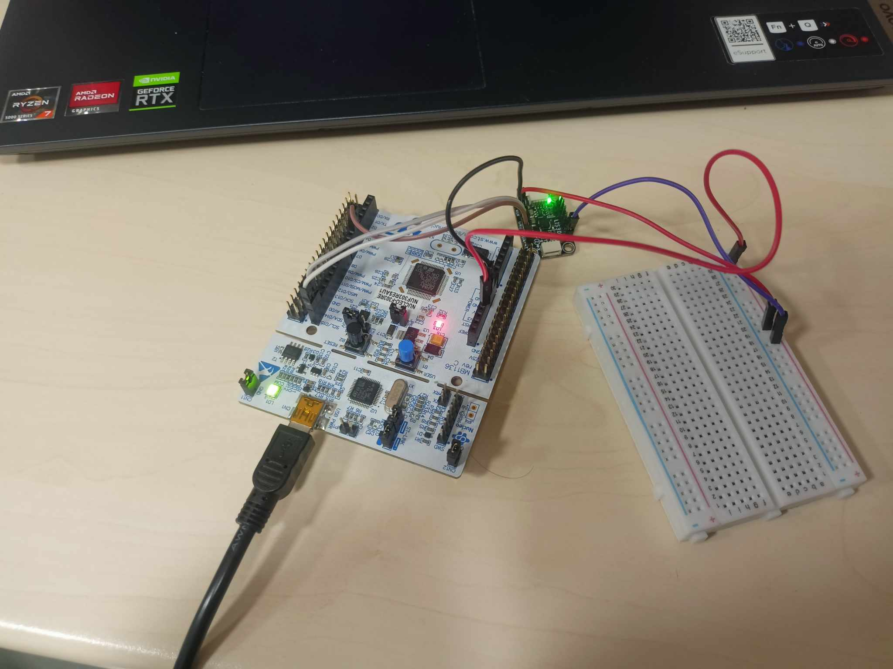

The DISTOBEE project was developed for the ESA 2nd Space Resources Challenge, held on October 17, 2025. I was responsible for the design and integration of the rover’s camera system. The camera housings were modeled in Autodesk Inventor, ensuring proper protection and alignment. The system utilized Raspberry Pi boards and capture cards for video processing and data transmission. The goal was to deliver a robust and reliable vision system capable of operating in demanding environments.

DOWNLOAD PDFThis project uses an STM32F303RE board connected via UART to a PC for real-time signal acquisition and analysis. The system reads analog data from a LIS3DH accelerometer, converts it to digital, and transmits it to a custom MATLAB app. The application displays the data either as time-domain waveforms or frequency spectra, with the mode selectable via a GUI button or voice commands. Speech recognition is implemented using a neural network and the device’s built-in microphone. The app also allows adjusting STFT window length for more detailed spectral analysis.
The project focused on designing a mechanical shaft based on a given set of technical and material parameters. The process involved dimensioning, material selection, and stress calculations to ensure mechanical reliability and safety. Design verification was carried out according to engineering standards and load conditions. The final model was optimized for durability and manufacturing feasibility.
This project involved performing kinematic and dynamic analyses of mechanical systems. It included calculating velocities, accelerations, and reaction forces for various mechanism components. Dynamic simulations were used to assess torque, power, and energy transfer efficiency. The results provided valuable insights for optimizing system performance and stability.
This project was completed as part of the university course "Service Robots". The task involved designing a complete robotic system entirely from scratch, including full forward and inverse kinematics, dynamic analysis, and the complete CAD model. Additionally, in a future i would like to develop a custom PCB in Altium Designer.
The project involved building a functional gearbox prototype using LEGO components controlled by a Husarion CORE2 board. The system was programmed in C to perform automated gear shifting and control logic. The design combined mechanical elements with embedded control and sensor feedback. The project demonstrated practical mechatronic integration of hardware, software, and mechanical structures.